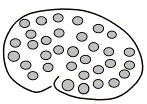
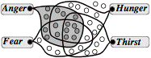

___0___
Nora Joyce, to her husband,
James: "Why don't you write books people can read?"
I hope this book will be useful
to everyone who seeks ideas about how human minds work, or wants suggestions
about better ways to think, or who aims toward building smarter machines. It should be useful to readers who want
to learn about the field of Artificial Intelligence. It should also be of interest to psychologists,
neurologists, computer scientists, and philosophers because it develops many
new ideas about the subjects those specialists struggle with.
We all admire great
accomplishments in the sciences, arts, and humanities—but we rarely acknowledge
how much we achieve in the course of our everyday lives. We recognize the
things we see, we understand the words we hear, and we remember things that
we’ve experienced so that, later, we can apply what we’ve learned to other
kinds of problems and opportunities.
We also do a remarkable thing that no other creatures seem able to do: whenever our usual ways to think fail, we can start to think about our thoughts themselves—and if this “reflective thinking’ shows where we went wrong, that can help us to invent new and more powerful ways to think. However, we still know very little about how our brains manage to do such things. How does imagination work? What are the causes of consciousness? What are emotions, feelings, and thoughts? How do we manage to think at all?
Contrast this with the progress we’ve seen toward answering questions about physical things. What are solids, liquids, and gases? What are colors, sounds, and temperatures? What are forces, stresses, and strains? What is the nature of energy? Today, almost all such mysteries have been explained in terms of very small numbers of simple laws—such as the equations discovered by such physicists as Newton, Maxwell, Einstein, and Schrödinger.
So naturally, psychologists tried
to imitate physicists—by searching for compact sets of laws to explain what
happens inside our brains.
However, this book will argue that this quest will fail because no
simple such set of laws exists, because every brain has hundreds of parts, each of which evolved
to do certain particular
kinds of jobs; some of them recognize situations, others tell muscles to
execute actions, others formulate goals and plans, and yet others accumulate
and use enormous bodies of knowledge. And though we don’t yet know much about
how each of those hundreds of brain-centers works, we do know that their
construction is based on information that is contained in tens of thousands of
inherited genes—so that each brain-parts works in a way that depends on
a somewhat different set of laws.
Once we recognize that our brains contain such complicated machinery, this suggests that we need to do the opposite of what those physicists did: instead of searching for simple explanations, we need to find more complicated ways to explain our most familiar mental events.
For example, the meanings of words like “feelings,” “emotions,” or “consciousness” seem so natural, clear, and direct to us that we cannot see how to start thinking about them. However, this book will argue that each of those words attempts to describe the effects of large networks of processes inside our brains. For example, Chapter 4 will demonstrate that “consciousness” refers to more than twenty different such processes!
It might appear to make everything
worse, to change some things that looked simple at first into problems that now
seem more difficult. However, on a
larger scale, this increase in complexity will actually make our job
easier. For, once we split each
old mystery into parts, we will have replaced each old, big problem with
several new and smaller ones—each of which may still be hard, but no longer
will seem unsolvable. Furthermore,
Chapter 9 will argue that regarding ourselves as complex machines need not
diminish our feelings of self-respect, and should enhance our sense of
responsibility.
To start dividing those old big questions into smaller ones, this book will begin by portraying a typical brain as containing a great many parts that we’ll call “resources.”[i]

We’ll use this image whenever we want to explain some mental activity (such as Anger, Love, or Embarrassment) by trying to show how that state of mind might result from the activities of a certain collection of mental resources. For example, the state called “Anger” appears to arouse resources that make us react with unusual speed and strength—while suppressing resources that we otherwise use to plan and act more prudently; thus Anger replaces your cautiousness with aggressiveness and trades your sympathy for hostility. Similarly, the condition called “Fear” would engage resources in ways that cause you to retreat.
Citizen: I sometimes find
myself in a state where everything seems cheerful and bright. Other times (although nothing has
changed) all my surroundings seem dreary and dark, and my friends describe me
as “down” or “depressed.” Why do I have such states of mind—or moods, or
feelings, or dispositions—and what causes all of their strange effects?
Some popular answers to this are, “Those changes are caused by chemicals in the brain,” or “They result from an excess of stress,” or “They come from thinking depressing thoughts.” However, such statements say almost nothing about how those processes actually work—whereas the idea of selecting a set of resources can suggest more specific ways in which our thinking can change. For example, Chapter 1 will begin by thinking about this very familiar phenomenon:
When a
person you know has fallen in love, it's almost as though someone new has
emerged—a person who thinks in other ways, with altered goals and
priorities. It's almost as though a switch had been
thrown and a different program has started to run.
What could happen inside a brain to make such changes in how it thinks? Here is the approach this book will take:
Each of our major “emotional states” results
from turning certain resources on while turning certain others off—and thus
changing some ways that our brains behave.
But what activates such sets of resources? Our later chapters will argue that our brains must also be equipped with resources that we’ll call Critics—each of which is specialized to recognize some certain condition—and then to activate a specific collection of other resources. Some of our Critics are built in from birth, to provide us with certain “instinctive” reactions—such as anger, hunger, fear and thirst—which evolved to help our ancestors survive. Thus, Anger and Fear evolved for defense and protection, while Hunger and Thirst evolved for nutrition.

However, as we learn and grow, we also develop ways to activate other, new sets of resources to use—and this leads to types of mental states that we regard as more “intellectual” than “emotional.” For example, whenever a problem seems hard to you, then your mind will start to switch among different Ways to Think—by selecting different sets of resources that can help you to divide the problem into smaller parts, or find suggestive analogies, or retrieve solutions from memories—or even ask some other person for help. In other words:
Each of our major Ways to Think results from turning certain resources on while turning certain others off—and thus changing some ways that our brains behave.
The rest of this book will argue that this could be what provides our species with our uniquely human resourcefulness. For example, our first few chapters will try to show how this could explain such states of mind as Love, Attachment, Grief, and Depression in terms of how they exploit our resources. Then the later chapters will do the same for more “intellectual” sorts of thought.
Citizen: It seems strange that you’ve given the same description both for emotions and for regular thinking. But thinking is basically rational—dry, detached, and logical —whereas emotions enliven our ways to think by adding irrational feelings and biases.
There is a traditional view in which emotions add extra features to plain, simple thoughts, much as artists use colors to augment the effects of black-and-white drawings. However, this book will argue, instead, that many of our emotional states result when certain particular Ways to Think start to suppress our use of certain resources! For example, Chapter 1 will portray “infatuation” as a condition in which we suppress some resources that we might otherwise use to recognize faults in somebody else. Besides, I think it’s a myth that there’s any such thing as purely logical, rational thinking—because our minds are always affected by our assumptions, values, and purposes.
Citizen: I still think your view of emotions ignores too much. For example, emotional states like fear and disgust involve the body as well as the brain, as when we feel discomfort in the chest or gut, or palpitations of the heart, or when we feel faint or tremble or sweat.
I agree that this view may seem too extreme—but sometimes, to explore new ideas, we need to set our old ones aside, at least temporarily. For example, in the most popular view, emotions are deeply involved with our bodies’ conditions. However, Chapter 7 will take the opposite view, by regarding our body parts as resources that our brains can use to change (or maintain) their mental states! For example, you sometimes can make yourself persist at a plan by maintaining a certain facial expression.
So, although this book is called “The Emotion Machine,” it will argue that emotional states are not especially different from the processes that we call “thinking”; instead, emotions are certain ways to think that we use to increase our resourcefulness—that is, when our passions don’t grow till they handicap us—and this variety of ways to think must be such a substantial part of what we call “intelligence” that perhaps we should call it “resourcefulness.” And this applies not only to emotional states but also to all of our mental activities:
If you “understand' something in only one way, then
you scarcely understand it at all—because when you get stuck, you'll have
nowhere to go. But if you represent something in several ways, then when you get
frustrated enough, you can switch among different points of view, until you
find one that works for you!
Accordingly, when we design machines to mimic our minds—that is, to create Artificial Intelligences—we’ll need to make sure that those machines, too, are equipped with sufficient diversity:
If a program works in only one
way, then it gets stuck when that method fails. But a program that has several ways to proceed could then
switch to some other approach, or search for a suitable substitute.
This idea is a central theme of this book—and it is firmly opposed to the popular view that each person has a central core—some sort of invisible spirit or self—from which all their mental abilities originate. For, that seems a demeaning idea—that all our virtues are secondhand—or that we deserve no credit for our accomplishments, because they come to us as gifts from some other source. Instead, I see our dignity as stemming from what we each have made of ourselves: a colossal collection of different ways to deal with different situations and predicaments. It is that diversity that distinguishes us from most of the other animals—and from all the machines that we’ve built in the past—and every chapter of this book will discuss some of the sources of our uniquely human resourcefulness.
Chapter 1. We are born with
many mental resources.
Chapter 2. We learn more from interacting with others.
Chapter 3. Emotions are different Ways to Think.
Chapter 4. We learn to think about our recent thoughts.
Chapter 5. We learn to think on multiple levels.
Chapter 6. We accumulate huge stores of commonsense knowledge.
Chapter 7. We switch among different Ways to Think.
Chapter 8. We find
multiple ways to represent things.
Chapter 9. We build multiple models of ourselves.
For centuries, psychologists searched for ways to explain our everyday mental processes—yet many thinkers still today regard the nature of mind as a mystery. Indeed, it still is widely believed that minds are made of ingredients that can only exist in living things, that no machine could feel or think, worry about what might happen to it, or even be conscious that it exists —or could ever develop the kinds of ideas that could lead to great paintings or symphonies.
This book will pursue all those goals at once:
to suggest how human brains might work and to design machines that can feel and
think. Then we can try to apply
those ideas both to understand ourselves and to develop Artificial Intelligence.
Each statement in quotation marks
is something said by an actual person; if it also has a publication date, the
source will be in the bibliography.
Marcel Proust 1927: “Each
reader reads only what is already inside himself. A book is only a sort of optical instrument which the writer
offers to let the reader discover in himself what he would not have found
without the aid of the book."
A statement without quotation
marks is a fictional comment a reader might make.
Citizen: If our everyday
thinking is so complex, then why does it seem so straightforward to us?
Most references are conventional
bibliographic citations, such as
Schank 1975: Roger C. Schank, Conceptual Information Processing, Elsevier Science Publishers 1975. ISBN: 0444107738.
Some references are to pages on the World Wide Web.
Lenat
1998: Douglas B. Lenat, The
Dimensions of Context Space, at
http://www.cyc.com/doc/context-space.pdf
Some other references are to newsgroups on the web, such as
McDermott 1992: Drew McDermott.
In comp.ai.philosophy, 7 Feb 1992.
To access such newsgroup
documents (along with the context in which they were written) one can make a
Google search for “comp.ai.philosophy McDermott”. Also I will try to maintain
copies of these on my website at www.emotionmachine.net, and invite readers with
questions and comments to send them to me by using that web site.
Note this book uses the term resource where my earlier book, The Society of
Mind, used agent. I made
this change because too many readers assumed that an “agent” is a personlike
thing (like a travel agent) that could operate independently, so that mental agents
could cooperate in much the same ways that people do. On the contrary, most resources are specialized to [do] certain kinds of jobs for
certain other resources, and cannot directly communicate with most
of the person’s other resources.
For more details about how these two books relate, see the article by
Push Singh 2003, who helped to develop many of the ideas in this book.